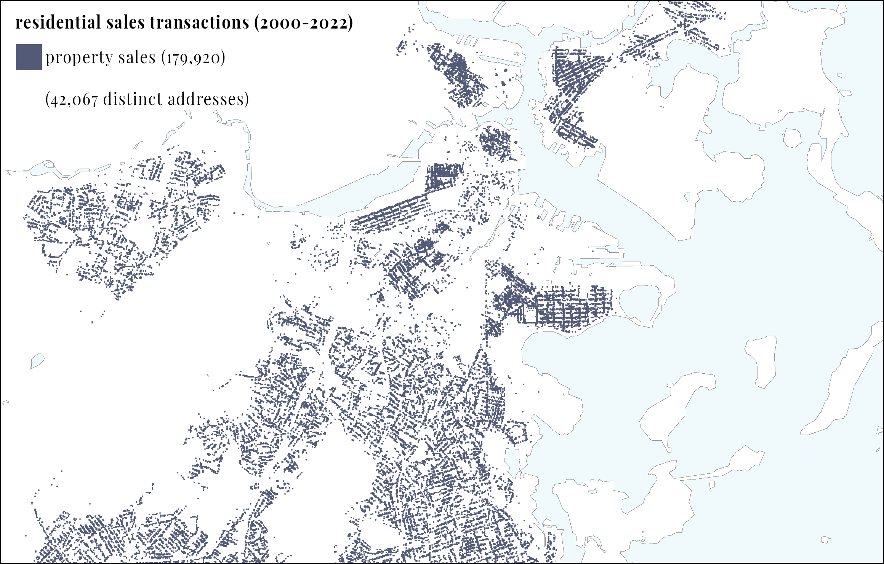

In fact, the shoreline of Boston experienced continious change over the past three centuries.
Let's take look at how Boston has transformed in such short amount of time!
What was Boston like?
Let's explore a map of Boston from the year 1640. At that time, much of Boston coastline consisted of marshland. These tidal areas around Boston were naturally prone to flooding, which happened regularly. The marshy conditions were ideal for oysters, which is why Boston became famous for them.
What is the impact of this land-making on Boston?
The "View of Boston Harbor" drawing by Haberman from 1770 highlights these areas as darker patches, indicating mud lands. This muddy terrain made it challenging for boats to approach the shoreline. Additionally, no houses were built on these lands due to their frequent flooding and the unstable, muddy conditions.
Slide to check out the history of land-making in connection with the 2050 projected flooding area.
This is a problem because unlike marshland where there were no properties on it, there are many properties on these made land. And in the future, coastal floods will only be more frequent. The chart below shows the number of properties in the projected flooding area.
2030
2050
2070
As Boston home-seeker, if you're going to live on these made land, you will be flooded soon.
What can you do? Should you avoid living on made land?
Probably this is not available, because
18% (14,887)
of properties are built on made land.
Flood insurance?
The least you can do to protect yourself is to see if you have a flood insurance.
In 1968, Congress created the National Flood Insurance Program (NFIP). This program offered homeowners affordable flood insurance because private companies were unwilling to take on the risk of damage caused by floods. The program is administered by the Federal Emergency Management Agency (FEMA).
Rates vary depending on:
The flood zone your property is located in
Its height above sea level
Your building’s characteristics
Today
Check out the flood insurance and year 2070 flood projection map.

Residential sales transaction
On made lands
Within flood zones
2030 projection
2050 projection
2070 projection
What does this mean for home-seekers?
To better understand the risks faced by prospective renters and homeowners in the Boston market,
we compiled geospatial data from third-party sources to overlay onto residential sales
data characterizing the Boston Market between 2000 and 2023.
With the prospect of looming sea level rise and heightened flood risk throughout Boston,
we expect that the buying and selling of properties would account for this near term risk.
However, despite overall property sales remaining consistent, we note that two categories Special Flood Hazard Area
and 9" Sea Level Rise are actually increasing in the last four years.
Similarly, we see that these zones are where more new properties are being built.
Has property speculation not been accounting for sea-level rise?
It's well known that buying and selling property is lucrative investment practice, but increasingly,
the practice of flipping means that people are buying and selling properties within a shorter timespan.
By counting which unique addresses are most frequently sold, we can analyze the impact of this
property speculation on properties falling within the different spatial risk zones.
Surprisingly, we find that across the categories, spatial risk has little to no correlation with how frequently a property is sold.
This means that so far in the twenty-first century, flood risk has not been driving market behavior.
How sustainable can this practice be?
The properties most prone to near term flood risk are those we would associate with "waterfront" communities such
as North End, East Boston, and Seaport.
As these properties are highly sought over for their convenient central locations, we also see that their prices
are higher on average compared to the Boston Market.
This trend appears in this chart as a diagonal clustering of properties between the $1-5 million price range.
Alarmingly, a smaller cluster appears in the row of properties sold 6 times or more, which are priced below $1 million.
These more affordable properties which are traded at a high frequency and face near term flood risk are potentially dangerous
for homebuyers entering the market.
All property types will face some exposure to flood risk in the coming century,
but condominiums and apartments in particular face heightened risk.
By 2070, in the 36" Sea-Level Rise scenario, more than 20% of condominiums and 15% of apartments in Boston
will coincide with the 100-year flood zone.
Now, let's go back to the start. Let's check out if your property is a good choice to begin your journey in Boston.
The address you selected is...
This property has an
Grade Risk
* The grading assessment is based on the following criteria: whether the property is situated on made land, its proximity to a flood-prone area, and whether it has flood insurance.
Sources
Dataset: Residential Sales data in the City of Boston, 2000-2023. Provided by The Warren Group.